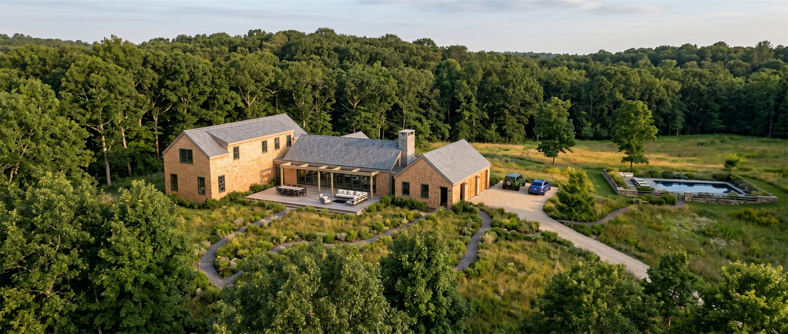
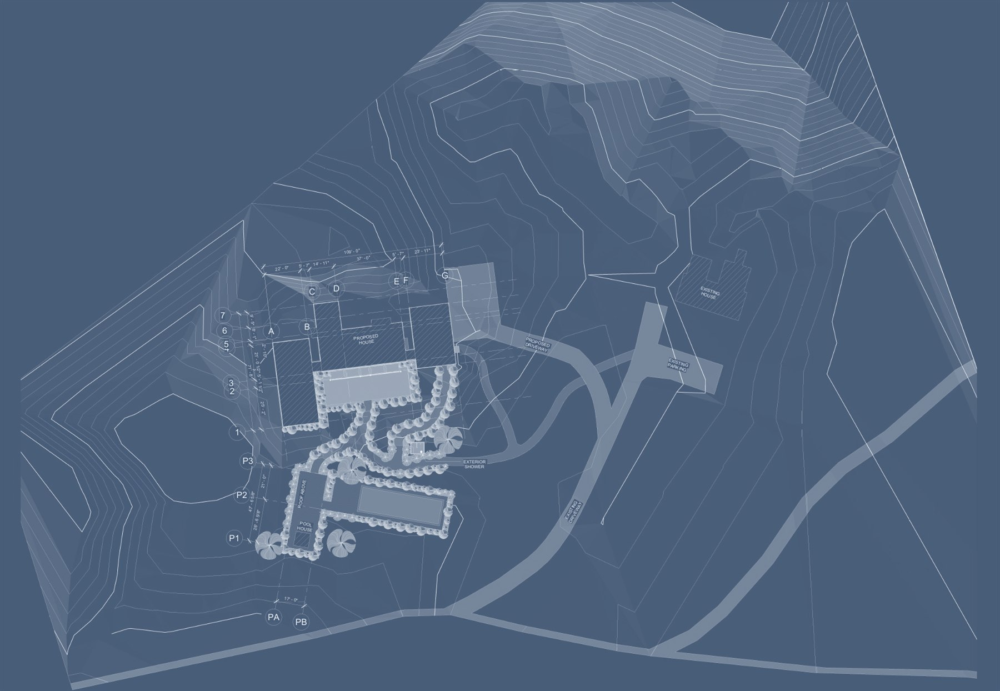
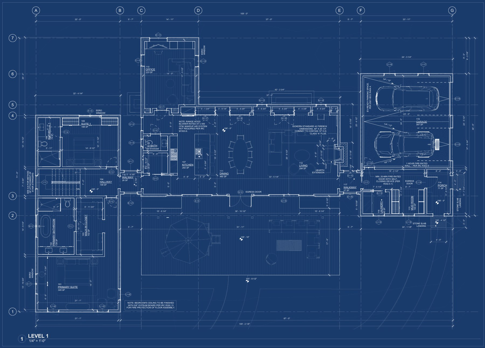
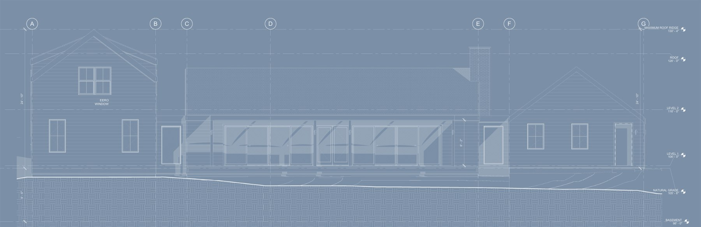
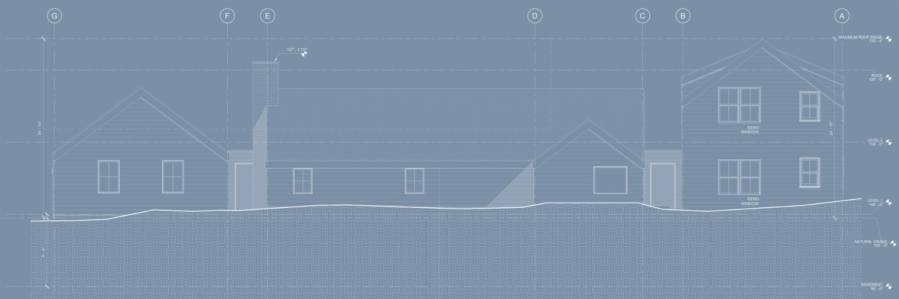

Martha's Vineyard was made by ice.
Martha's Vineyard is a glacial landscape. When the Laurentide Ice Sheet withdrew eighteen thousand years ago, it left the island two signatures: kettles, the bowl-shaped hollows where buried ice melted back into the earth, and moraines, the ridges of stone the glacier carried and set down at its edge. Hollow and rise, hollow and rise — the island's topography is the record of that retreat.
Red Coat Hill sits in one of those kettles. A moraine spine runs through the site, dividing it into territories of exposure and shelter, and the house answers directly: set along the ridge, facing the bowl, reaching forward into the open ground the glacier left behind.
Inside, a great room and study anchor the plan. To either side, narrow window-lined corridors turn the eye back toward the house itself, so that moving through the building feels like passing between three distinct volumes — an experience of passage as much as enclosure.
At 3,800 square feet, this is among the larger homes in our practice, and the scale is purposeful. Our clients asked for one thing above all: a place where generations gather. Four en-suite bedrooms and a layered sequence of indoor and outdoor rooms answer that call, all of it oriented toward the meadow that will become the family's center of gravity.






